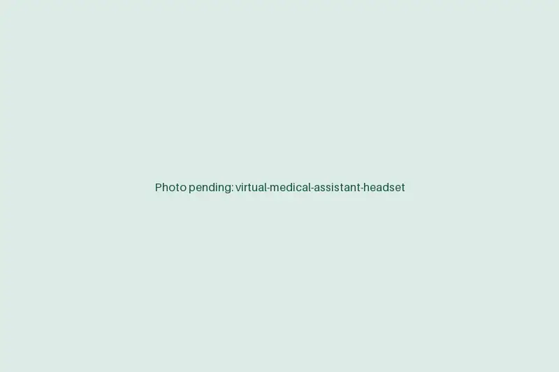

Virtual medical assistant services for the work between visits
Refill requests, portal messages and chart prep keep landing while your MAs room patients. A virtual medical assistant takes that queue remotely, trained in your EMR and working your clinic hours, so the people in the building can stay with the person in the room.
Book a discovery callAt a glance
- Works in
- Your EMR inbox, patient portal and phone system
- Scope
- Admin and clinical support inside your protocols
- Hours
- Your clinic hours, your time zone
- Starts
- About two weeks from kickoff

Tasks a virtual MA can take off your team
Pick the queues that eat the most time. Most practices start with two or three and add more once the rhythm settles.
Scheduling and reminders
Book, move and confirm appointments, and fill cancellations from the waitlist.
Chart prep
Pull outside records, update med and allergy lists for provider review, and queue the visit's forms.
Refill requests
Route refill requests to the provider with the last visit, recent labs and pharmacy details attached.
Portal messages
Sort messages by your protocol, answer admin questions and send clinical ones to the right person.
Forms and letters
Prepare FMLA, disability, school and work forms for provider review and signature.
Recalls
Work recall lists for annual visits, labs and screenings that are overdue.
Where the line sits: virtual MAs don't make clinical decisions. Anything clinical goes to your licensed staff under the rules you set.
Getting your virtual MA working
The goal of the first two weeks is a written playbook, so the work doesn't depend on one person's memory.
- Days 1 to 2
Pick the queues
We list what's eating your team's time and choose the tasks that move best to remote work.
- Days 3 to 6
Write the playbook
Your protocols for messages, refills and scheduling become a short guide the assistant follows.
- Week 2
Shadow, then lead
The assistant shadows your team on live work, then takes the queues with a daily check-in.
- Ongoing
Keep it current
A weekly review with your practice manager keeps priorities right as the clinic changes.
Why practices add a virtual MA
It's extra capacity without another chair in the office.
For your practice
- In-office MAs spend their time rooming patients and supporting providers.
- Inbox and refill queues cleared every day.
- Providers start visits with charts already prepped.
- Cover for sick days and turnover without starting a new hire. [STAT: e.g. hours returned to in-office staff per week]
For your patients
- Faster replies to portal messages.
- Refills handled before the bottle runs out.
- Easier rescheduling when plans change.
Remote, with tighter guardrails than the office
An assistant working from home should have less room for error than one at the front desk, not more.
- Inside your EMRThe assistant works in your EMR, portal and phone system. There's no separate copy of patient data.
- No local storageNothing is saved to the workstation, personal email or cloud drives.
- Printing and downloads offWorkstations have printing, downloads and removable storage disabled.
- Credentials you controlLogins are issued per person by your practice and can be shut off in minutes.
- BAA in placeWe sign a Business Associate Agreement before the assistant sees a single chart.
Virtual medical assistant FAQs
How much does a virtual medical assistant cost?
A flat monthly rate for a full-time or part-time assistant, with no recruiting fees and no benefits to manage on your side. The discovery call gives us enough to quote.
Will the assistant know our EMR?
We train each assistant on your system before go-live, whether that's Epic, athenahealth, eClinicalWorks, NextGen, Practice Fusion or ModMed. They also learn your templates, message pools and phone scripts.
How fast are messages and refills handled?
We agree a response standard with you, such as portal messages answered or routed the same business day. The assistant works the queues continuously through the shift.
Is a virtual medical assistant HIPAA compliant?
The setup is. We sign a BAA, the assistant works only inside your systems under a named login, and printing, downloads and local storage are blocked. Your EMR logs every action.
Can the assistant work our clinic hours?
Yes. Shifts are set to your hours and time zone, including early starts before clinic opens or cover for evening sessions.
Try a virtual MA on your busiest queue
Tell us which queue your team dreads. We'll show how an assistant would work it and what a first month looks like.
Book a discovery call